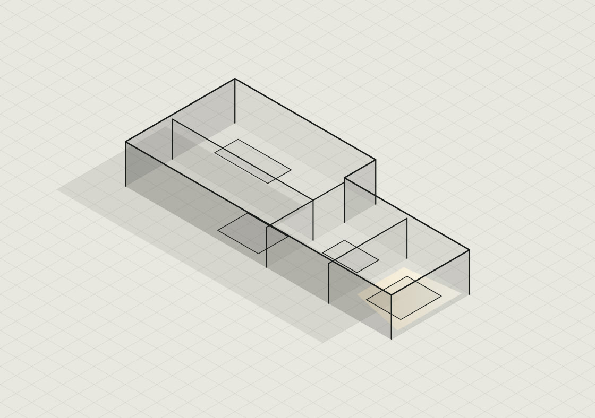
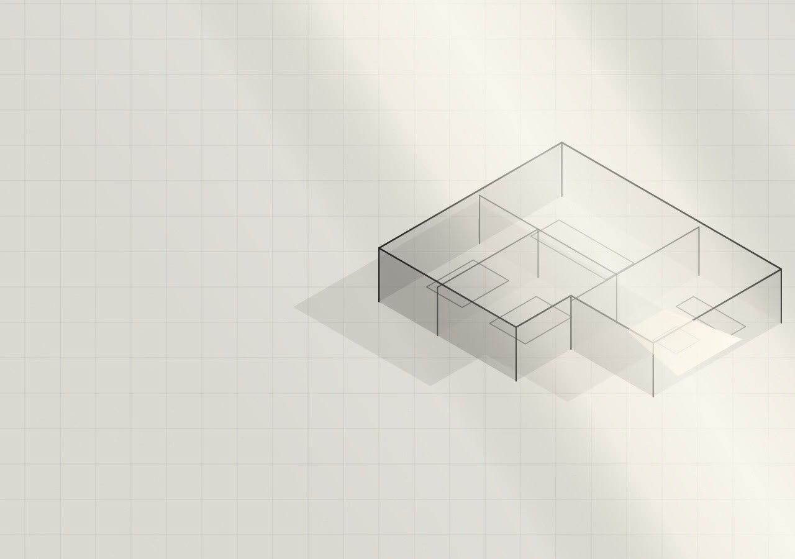
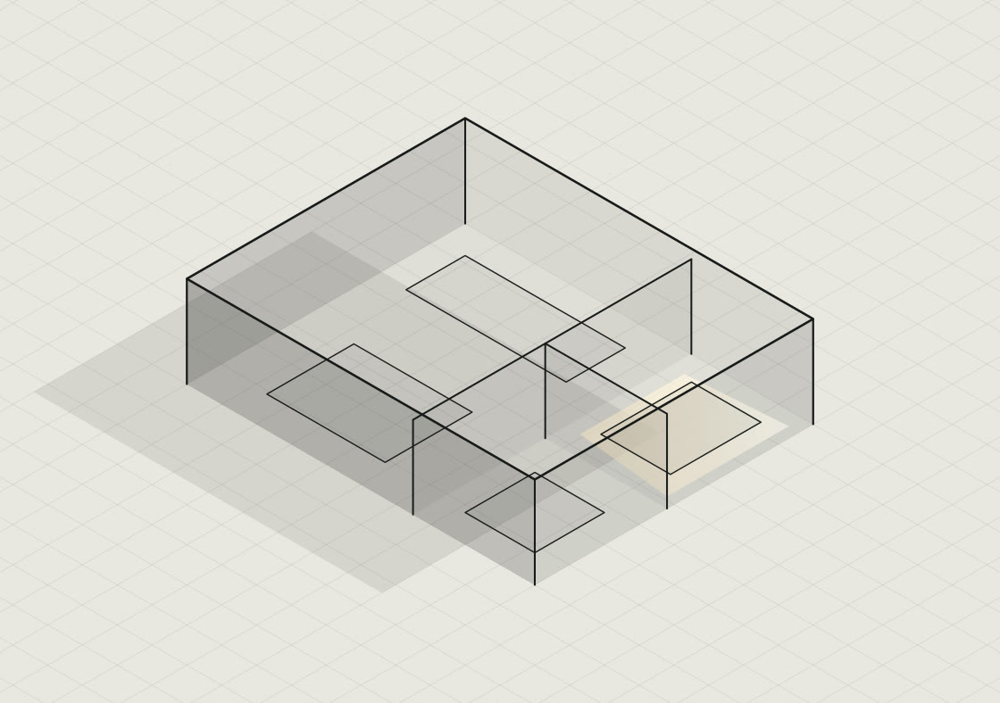
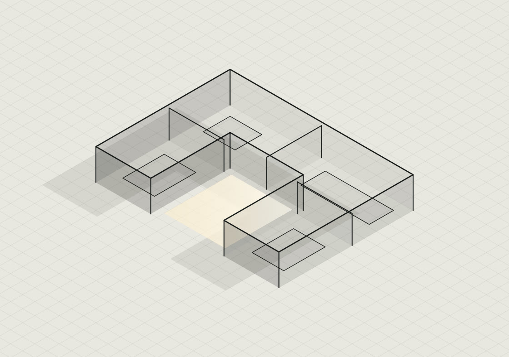

Дім на схилі
Ділянка падала на чотири метри. Замість вирівнювати її бульдозером, розклали будинок на два рівні по схилу. Земляні роботи дешевші за півтора місяця.
01 / 05
Більшість людей не вміє описати свій дім. Це нормально.
02 / 05
Спершу питання. Потім лінія.
Ми питаємо про ваш день, а не про стиль фасаду.
03 / 05
Кожна стіна має причину.
І ми можемо назвати її вголос. Для кожної.
04 / 05
Креслення стає обʼємом.
Ви бачите будинок до того, як покладено перший блок.
05 / 05
Osnova
Архітектурне бюро. Приватні будинки від ескізу до авторського нагляду.

Osnova · архітектурне бюро
Osnova. Архітектурне бюро. Ми починаємо не з вашого опису, а з питань про те, як ви живете.
Між цими двома станами лежить наша робота. Нижче видно, з чого вона складається.
01 / метод
Від цього залежить, куди дивляться вікна спальні. Не від сторін світу в довіднику, а від вашої години.
У більшості проєктів їдальня велика й порожня, а живуть на кухні. Ми зʼясовуємо це до креслення, а не після новосілля.
Дім проєктують під буденність, а ламається він на святах. Найбільший стіл у році вирішує ширину однієї стіни.
02 / проєкти

Ділянка падала на чотири метри. Замість вирівнювати її бульдозером, розклали будинок на два рівні по схилу. Земляні роботи дешевші за півтора місяця.

Замовники сказали «нам не потрібно багато». Ми повірили. Одна велика кімната замість трьох маленьких, і вікно на всю східну стіну.

Три сусіди з трьох боків. Розвернули будинок усередину себе: глухі стіни назовні, весь дім дивиться у власний двір.
03 / спробуйте
Ви щойно прочитали, що ми питаємо про життя, а не про фасад. Ось як це працює. Дайте три відповіді, і сторінка накреслить план, який з них випливає. Це не проєкт, це демонстрація логіки.
Дайте три відповіді, і план зʼявиться тут.
Це вісім можливих планів на три питання. У справжній роботі питань близько сорока.
04 / стадії
Плани, фасади, посадка на ділянку. Тут ще дешево передумати.
Розрізи, вузли, специфікації. З цим ідуть по дозвіл.
Усе, за чим будують: конструкції, мережі, відомості матеріалів.
Ми приїжджаємо на будівництво і звіряємо збудоване з кресленням. Це та послуга, через яку намальоване і збудоване збігаються.
05 / ціна
| Стадія | За квадратний метр |
|---|---|
| Ескізний проєкт | 180 грн |
| Архітектурний проєкт | 320 грн |
| Робочий проєкт | 520 грн |
Авторський нагляд рахується помісячно, від початку робіт до здачі.
Точну суму називаємо після першої розмови, коли відома площа й складність ділянки.
06 / питання
07 / розмова
Ділянка, площа, скільки вас. Якщо чогось із цього ще немає, так і напишіть, це нормальний початок.